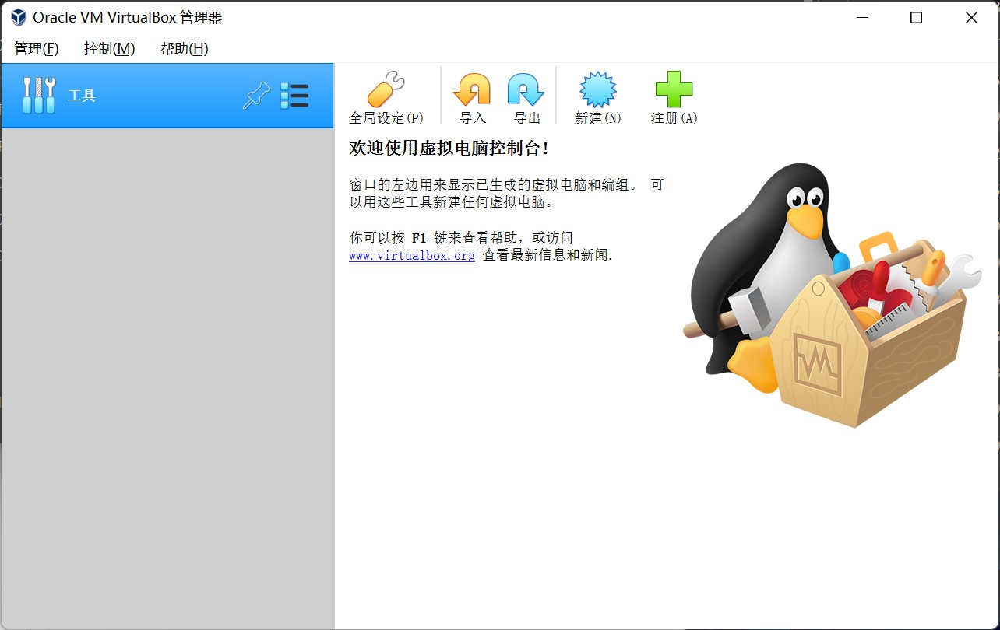
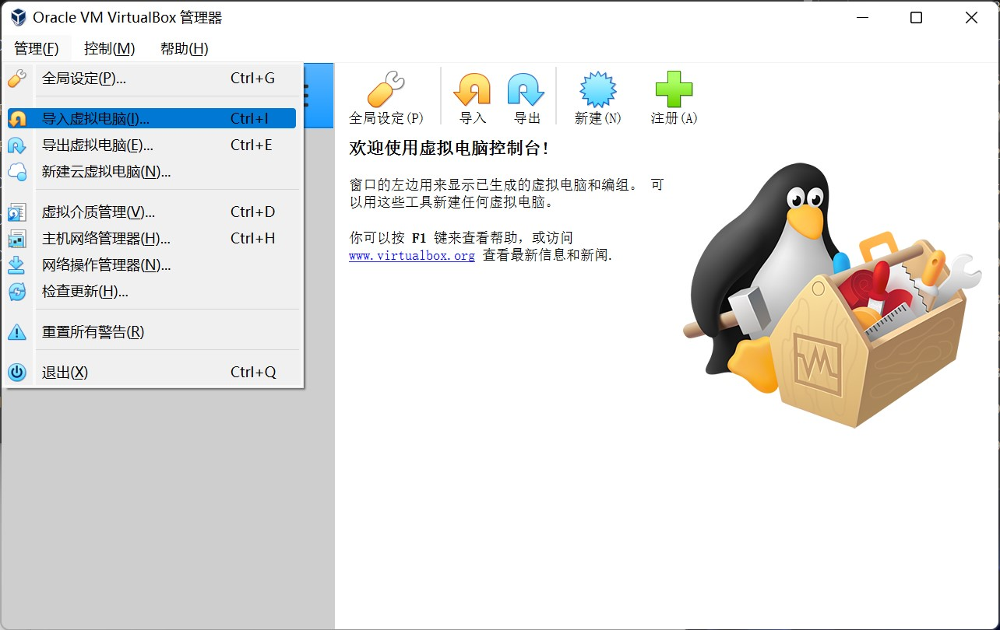

Windows系统下准备环境：虚拟机方案
这一节讲述如何在Windows环境下准备Ubuntu虚拟机，以及虚拟机中的Docker环境。
1. 安装虚拟机
Window环境下，需要先安装虚拟机：
- 下载 Ubuntu 20.04 虚拟机文件
- 下载 VirtualBox并安装 
- 点击管理 - 导入虚拟电脑 
- 在弹出窗口中选择虚拟机文件

- 根据实际计算机配置调整虚拟机处理器 / 内存配置，修改虚拟机保存路径

- 导入完成后如图所示

- 点击Ubuntu 20.04启动虚拟机，登录
- 虚拟机用户名为
ubuntu，密码为ubuntu - 进入系统后，可以单击右上角 - Settings - Displays - Resolution 修改屏幕大小

- 虚拟机用户名为
- 按照下一节准备Ubuntu虚拟机中的Docker环境
2. 安装Docker环境
2.1 换源加快安装速度
执行以下命令换源，后续安装过程会更快：
sudo sed -i "s@http://.*archive.ubuntu.com@https://mirrors.tuna.tsinghua.edu.cn@g" /etc/apt/sources.list
sudo sed -i "s@http://.*security.ubuntu.com@https://mirrors.tuna.tsinghua.edu.cn@g" /etc/apt/sources.list
2.2 准备安装脚本
点击左下角菜单，直接输入gedit，点击打开文本编辑器，复制并粘贴以下内容：
#!/bin/bash
set -x
set -e
apt-get update
apt-get -y install \
ca-certificates \
curl \
gnupg \
lsb-release
curl -fsSL https://download.docker.com/linux/ubuntu/gpg | gpg --dearmor -o /usr/share/keyrings/docker-archive-keyring.gpg
echo \
"deb [arch=$(dpkg --print-architecture) signed-by=/usr/share/keyrings/docker-archive-keyring.gpg] https://download.docker.com/linux/ubuntu \
$(lsb_release -cs) stable" | tee /etc/apt/sources.list.d/docker.list > /dev/null
apt-get update
apt-get install -y docker-ce docker-ce-cli containerd.io
systemctl restart docker
点击“Save”或“保存”，将文件命名为install.sh。
然后点击左下角菜单，输入teminal，点击打开命令行，输入并执行以下命令：
sudo bash install.sh
sudo usermod -aG docker $USER
执行完成后，重启虚拟机即可使用 Docker 容器。执行以下命令检验已经成功安装：
docker ps
正确的运行结果应为
CONTAINER ID IMAGE COMMAND CREATED STATUS PORTS